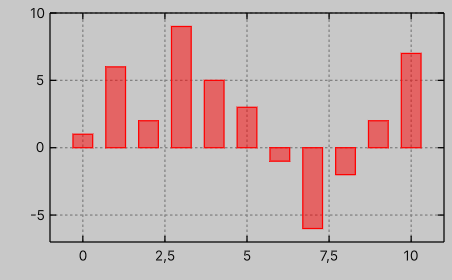
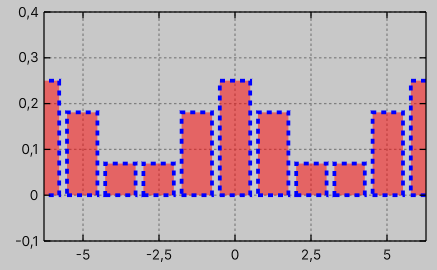

Plot with bars
Data
To plot bars, one can use PlotWithBars.
This type is similar to PlotWithPoints, but instead of drawing points, it draws boxes from the baseline y0 to the corresponding points in the provided IReadOnlyList<float2> data.
Additionally, you can configure the bar width and anchor.
var graph = new Graph
{
XAxis = { Min = -1, Max = 11 },
YAxis = { Min = -7, Max = 10 },
};
var bars = new float2[]
{
new(0, 1),
new(1, 6),
new(2, 2),
new(3, 9),
new(4, 5),
new(5, 3),
new(6, -1),
new(7, -6),
new(8, -2),
new(9, 2),
new(10, 7),
};
graph.PlotWithBars(bars, y0: 0, width: 0.6f, anchor: BarAnchor.Center);

Similar to PlotWithPoints, NaN values are ignored.
Styling
This plot type has the same properties as PlotWithLines, with the addition of the FillColor property (--graph-fill-color).
